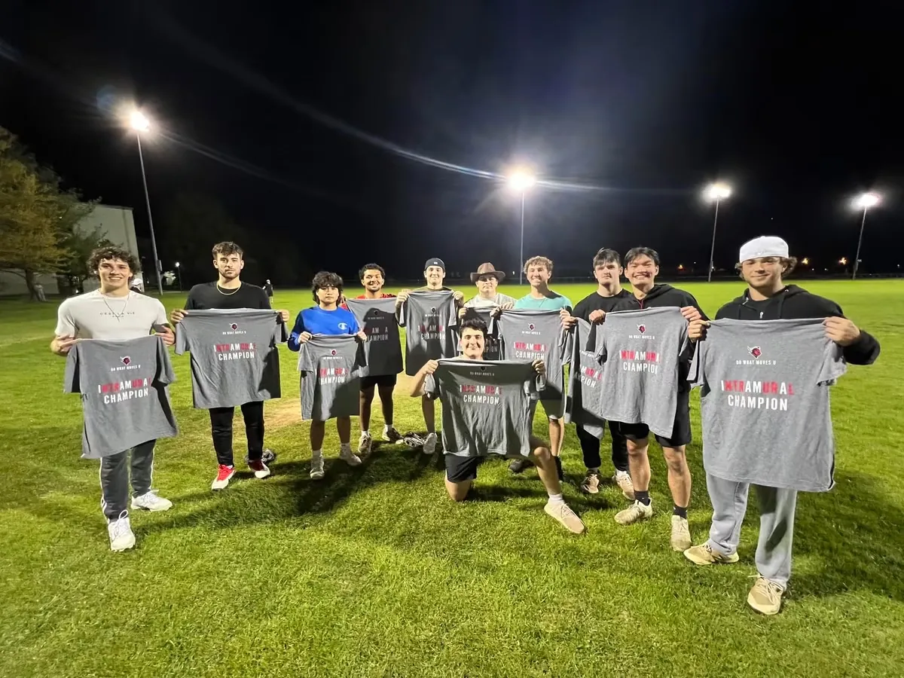
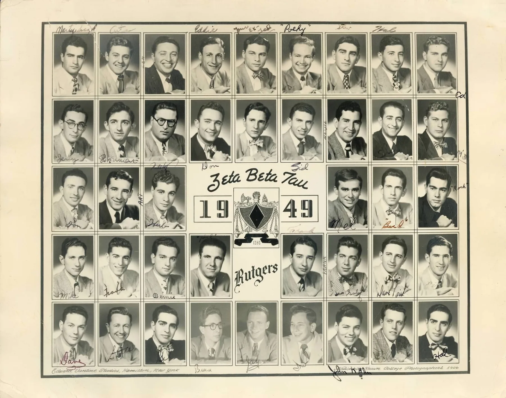
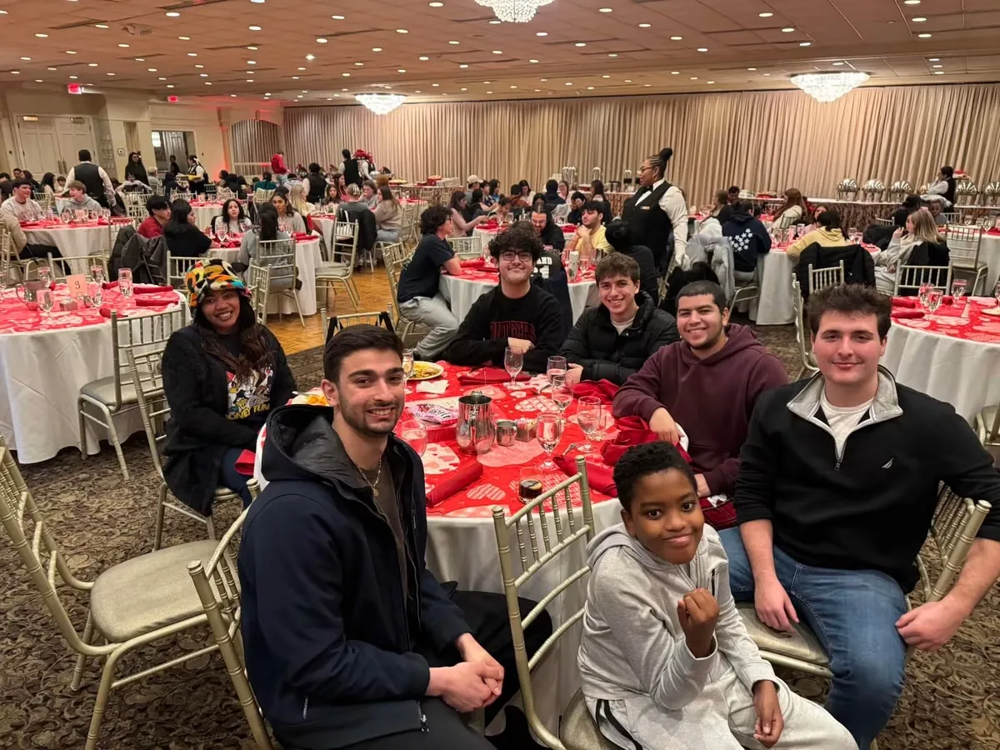
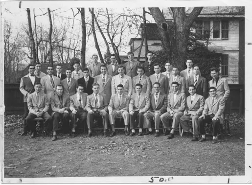
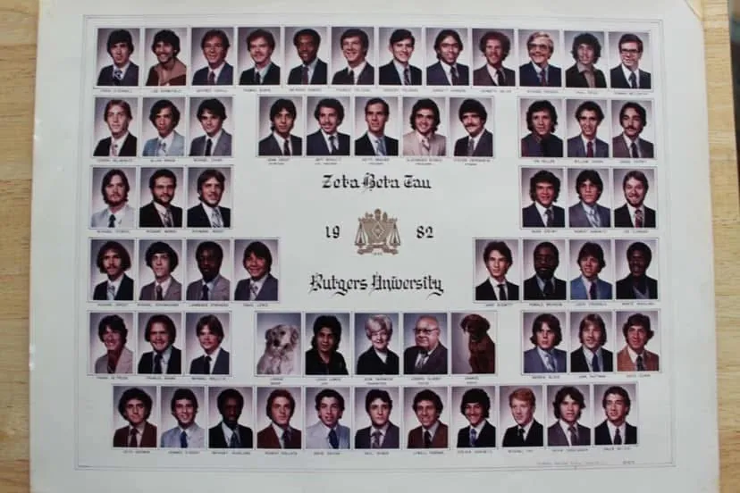

Family & Alumni Open House at 106 College Avenue
Families and alumni are invited to tour the chapter’s new home, meet the brothers and celebrate from 1:00–5:00 PM.
View event details
Zeta Beta Tau · Beta Delta Chapter
Rutgers University · Established 1948
Welcome to Beta Delta
Since 1948, Beta Delta has given Rutgers students a place to form close friendships while taking on real responsibility. Today’s brothers lead recruitment, academics, philanthropy, alumni relations, communications, athletics and the daily operation of 106 College Avenue.
The chapter’s newest era combines record recruitment, a new home on College Avenue and a growing historical archive that preserves the generations who built Beta Delta before us.
Learn More About the ChapterBeta Delta in Motion
Recruitment, travel and time together give prospective members a clearer picture of the relationships and experiences that shape Beta Delta.
Latest from Beta Delta
Recent chapter updates, athletic results and new archival material give current members and alumni more reasons to stay connected.
Families and alumni are invited to tour the chapter’s new home, meet the brothers and celebrate from 1:00–5:00 PM.
View event details
Beta Delta won Keller football in 2016 and softball in 2024, followed by undefeated football and softball regular seasons in 2025.
Read the athletics update
Composites, newsletters, artifacts and candid photographs now preserve the chapter’s story online.
Explore the archiveChapter Snapshot
Student Leadership
The President and vice presidents manage the chapter’s daily operations, long-term planning and relationships with Rutgers, alumni and ZBT International.

Our Home
With ZBT letters displayed on College Avenue, 106 gives Beta Delta a visible home on campus for the first time in ten years. It represents continuity, long-term investment and a place where current brothers, alumni and future classes can build the chapter together.
Philanthropy & Service
Beta Delta supports Myles through the RU4Kids Foundation, raises funds through ZBT Tahiti and has contributed more than $10,000 to Rutgers University Dance Marathon.
The chapter also recorded the highest service hours among Rutgers fraternities in 2025.
Explore Philanthropy
A Living Archive
From the 1949 chapter portrait to composites, newsletters, pledge-class artifacts, chapter houses and alumni gatherings, the archive connects current brothers with the generations who built the chapter.
Explore Chapter History


Prospective Members
Complete the interest form, meet the Recruitment Directors and see the chapter through the Fall 2025 and Spring 2026 recruitment videos.
Recruitment Interest FormAlumni & Families
Explore news, archives, alumni events and the history behind the chapter’s newest era.